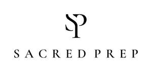

Trade Mark Journal No.2025/027 4 July 2025
UK00004188557 14 April 2025 (3,5,25,30,35)

- Class 3
- Bath salts; Non-medicated bath salts; Cosmetic bath salts; Bath soaps; Bath oils; Bath crystals; Bath soap; Bath herbs; Scented bathing salts; Liquid bath soaps; Bath lotion; Bath gels; Bath creams; Foams for the bath; Bath foams; Bath and shower oils [non-medicated]; Liquid bath soap; Bath powder; Bath and shower gels; Bath flakes; Bath bombs; Aromatic oils for the bath; Bath crystals (Non-medicated -); Bath milk; Bath and shower preparations; Shower and bath preparations; Preparations for use in the bath or shower; Preparations for the bath and shower; Bath gel; Non-medicated bath oils; Bath oils (Non-medicated -); Bath cream; Liquid soap used in foot bath; Foaming bath gels; Bath pearls; Bath preparations; Preparations for the bath; Shower and bath foam; Bath and shower foam; Bath oil; Bath foam; Foam bath; Shower and bath gel; Bath and shower gel; Foaming bath liquids; Bath foams (Non-medicated -); Bath powders (Non-medicated -); Bubble bath; Liquid soap used in foot baths; Bath powder [cosmetics]; Foam bath preparations; Bath salts, not for medical purposes; Cosmetic preparations for bath and shower; Bath gels (Non-medicated -); Bath creams (Non-medicated -); Bubble bath preparations; Bath pearls (Non-medicated -); Skincare cosmetics; Skincare preparations; Moisturisers [cosmetics]; Skin moisturizers used as cosmetics; Anti-aging moisturizers; Beauty serums; Facial moisturisers [cosmetic]; Skin cleansers [cosmetic]; Moisturising skin creams [cosmetic]; Suncare lotions; Skin moisturisers; Skin care cosmetics; Beauty lotions; Skin moisturizers; Skin balms [cosmetic]; Beauty care cosmetics; Skin care creams [cosmetic]; Skin recovery creams [cosmetics]; Cosmetic nourishing creams; Skin cleansers; Skin masks [cosmetics]; Exfoliants for the care of the skin; Body and facial creams [cosmetics]; Skin care oils [cosmetic]; Lotions for the skin; Beauty balm creams; Facial creams [cosmetic].
- Class 5
- Mineral salts for baths; Salts for mineral water baths; Baths (Salts for mineral water -); Epsom salts; Medicinal tea; Herbal tea for medicinal use; Herbal teas for medicinal purposes; Herbal medicine; Herbal beverages for medicinal use; Herb teas for medicinal purposes; Herbal supplements; Asthmatic tea; Extracts of medicinal herbs.
- Class 25
- Bath slippers; Bath robes; Robes (Bath -); Bath sandals; Clothing; Knitwear [clothing]; Jackets [clothing]; Ready-to-wear clothing; Woolen clothing; Furs [clothing]; Linen clothing; Headbands [clothing]; Headbands for clothing; Gloves [clothing]; Clothes; Aprons [clothing]; Maternity clothing; Cashmere clothing; Casual clothing.
- Class 30
- Herbal tea; Herbal teas; Tea; Herbal teas [infusions].
- Class 35
- Wholesale services in relation to ice creams; Retail services connected with the sale of clothing and clothing accessories; Retail services in relation to clothing accessories; Mail order retail services for clothing accessories; Marketing research in the fields of cosmetics, perfumery and beauty products.
Charlotte Aaron Pryce